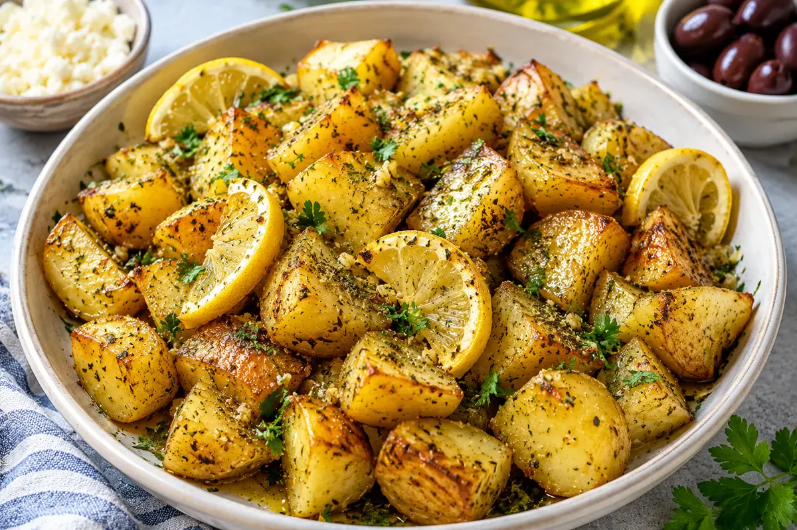

Crispy Greek Lemon Potatoes

Illustrative image.
Greek lemon potatoes get their character from the way they cook: a long roast in olive oil, lemon juice and broth, so the wedges braise at first and then crisp as the liquid disappears. The result is a potato that is creamy through the middle with edges that crunch.
They go with almost anything grilled, and they are forgiving enough to make for a crowd. Three pounds of potatoes serve six and need about an hour in the oven, most of it unattended.
Ingredients
- 3 lbs Yukon Gold potatoes, peeled and cut into wedges
- 1/2 cup extra virgin olive oil
- 1/2 cup chicken or vegetable broth
- Juice of 2 large lemons
- 4 cloves garlic, minced
- 1 tbsp dried oregano
- Salt and coarse black pepper to taste
Instructions
- Preheat oven to 400°F (200°C). Arrange potato wedges in a large 9x13-inch roasting pan.
- In a measuring cup, whisk together the olive oil, broth, fresh lemon juice, minced garlic, oregano, salt, and pepper. Pour the liquid completely over the potatoes, tossing to make sure they are well seasoned.
- Roast in the oven for 40 minutes. Give the pan a good stir, flipping the wedges.
- Bake for an additional 10-15 minutes until most of the liquid is absorbed and the edges of the potatoes are beautifully golden brown and crispy.
Why this recipe works
The broth is what separates these from ordinary roast potatoes. It keeps the interior moist and carries lemon and oregano into the potato, and once it has evaporated the oil finishes the job, browning the outside in the last fifteen minutes.
Tips for success
- Cut the wedges to a similar size, around three quarters of an inch at the thick end, so they cook evenly.
- Arrange them cut-side down in a single layer so the flat surfaces make contact with the hot pan.
- Do not add more liquid near the end; if the pan is still wet, roast for another ten minutes uncovered.
Substitutions that work
- Yukon Gold or Maris Piper are the best choices. Waxy salad potatoes will not go as creamy inside.
- Use vegetable broth in place of chicken broth for a vegetarian version.
- Add a teaspoon of smoked paprika or a pinch of chili flakes for a slightly different profile.
Storage and make-ahead
Refrigerate leftovers for three days in a covered container. Reheat at 400 F for ten minutes to restore the crisp edges, or use them in a frittata. They freeze acceptably but lose some texture.
Serving suggestions
Serve with grilled chicken, roast lamb, lemon herb chicken or grilled salmon. A spoonful of tzatziki and a Greek salad completes the plate.
Choosing the roasting pan
A metal roasting pan conducts heat better than glass and gives the potatoes a stronger crust on the bottom, so use one if you have it. The pan should hold the wedges in a single layer with a little space between them; if they are piled up, the ones in the middle will steam. Add the broth before the oil so it settles underneath, and do not stir the potatoes more than once, halfway through, or the crisp surfaces break up. If the liquid has not evaporated after forty minutes, move the pan to a higher shelf and give it ten more minutes uncovered.
Frequently asked questions
Why are my Greek potatoes not crispy?
There was too much liquid left in the pan. Let the broth cook away completely and give the potatoes a final ten to fifteen minutes uncovered at high heat.
Can I use red potatoes?
Yes, though they hold a little more water. Cut them slightly smaller and allow extra roasting time.
Do I need to peel the potatoes?
Peeled potatoes absorb more of the lemon and broth. Unpeeled wedges crisp better on the outside, so either works depending on what you prefer.